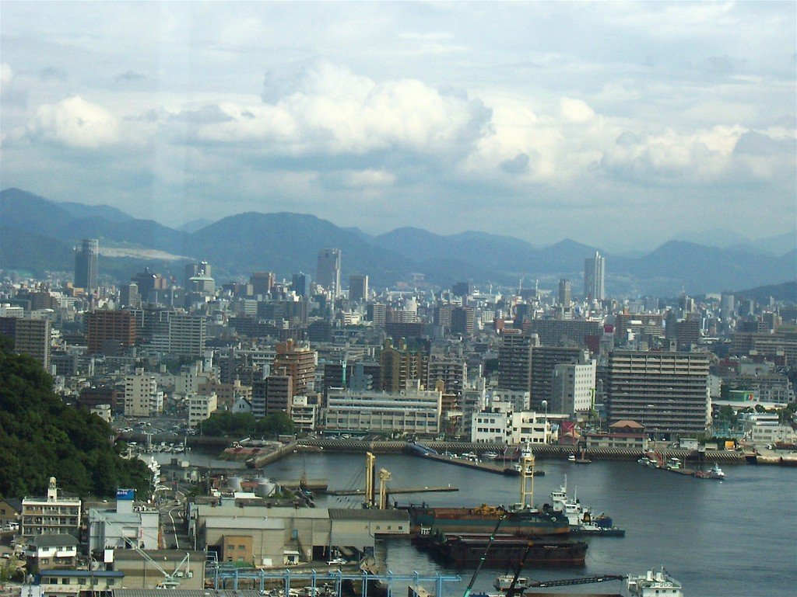
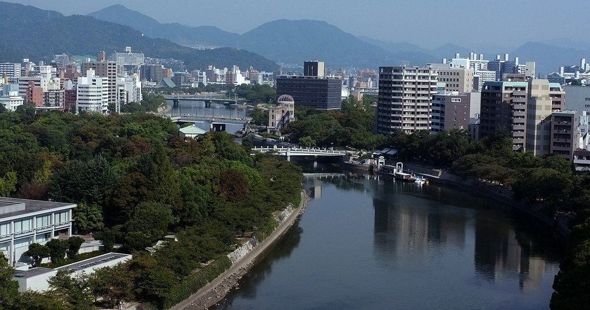
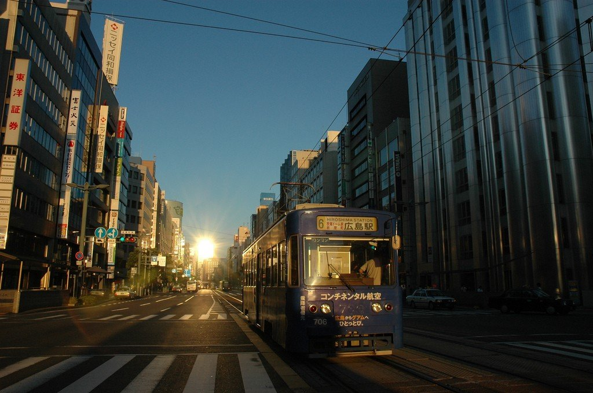
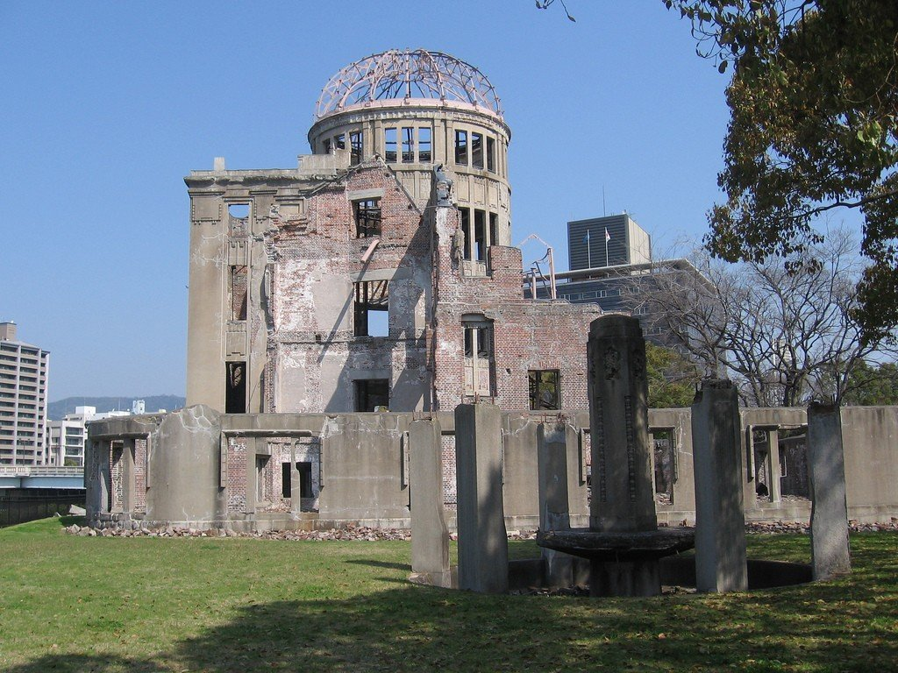
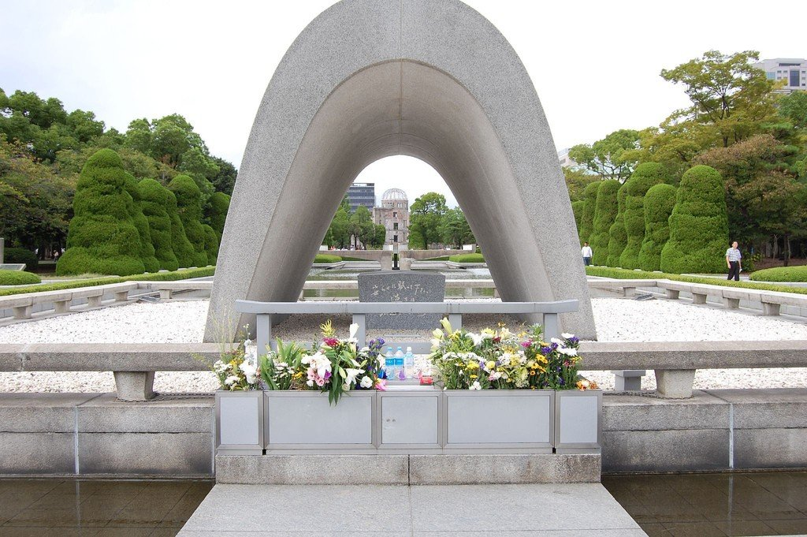
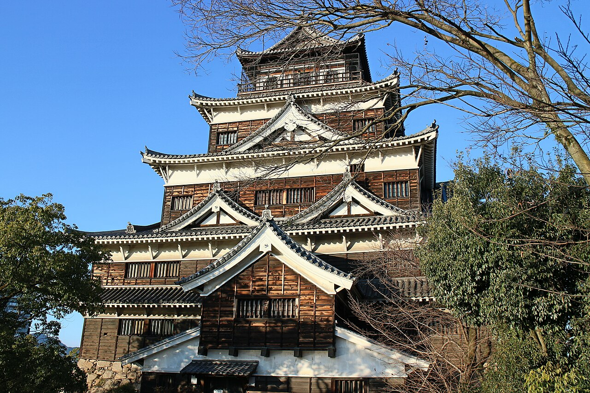
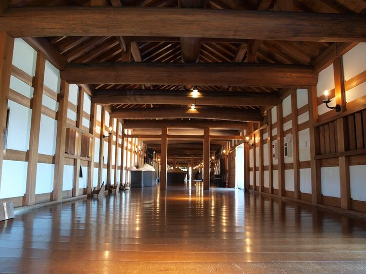

Хиросима — город в западной части Японии, расположенный на острове Хонсю. Он известен во всем мире как место трагических событий Второй мировой войны, однако сегодня это современный и мирный город, символизирующий надежду и стремление к миру. Хиросима сочетает в себе глубокую историю и динамичное развитие.
Хиросима – это город на юго-западе Японии, расположенный на берегу Внутреннего Японского моря. В отличие от шумной Осаки или медитативного Киото, Хиросима производит впечатление удивительно спокойного и умиротворенного места. Здесь шире улицы, больше зелени и меньше той безумной суеты, которой славится Токио. Город окружен горами и морем, а через его центр протекает живописная река Ота-гава с несколькими рукавами, за что Хиросиму иногда называют «городом шести рек».
Сегодня Хиросима – это современный мегаполис с населением около 1,2 миллиона человек. Здесь развита автомобильная промышленность (вспомните хотя бы штаб-квартиру Mazda), есть университеты, музеи и торговые центры. Но туристы едут сюда вовсе не за шопингом или ночными клубами. Главная причина посетить Хиросиму – это желание прикоснуться к истории, которая потрясла весь мир, и увидеть своими глазами, как город сумел возродиться из пепла.



Хиросима была основана в 1589 году могущественным феодалом Мори Тэрумото на месте небольшой рыбацкой деревни. Он построил здесь замок, который должен был стать его резиденцией и символом власти над западными землями Японии. Период Адзути-Момояма – это время междоусобных войн и объединения страны, и Хиросима быстро превратилась в важный стратегический и торговый центр. После битвы при Сэкигахаре клан Мори лишился этих земель, и город перешел под контроль сёгуната Токугава, но продолжал расти и развиваться как военный и промышленный центр.
Утром 6 августа 1945 года история Хиросимы разделилась на «до» и «после». Американский бомбардировщик B-29 «Энола Гэй» сбросил на город атомную бомбу «Малыш». Взрыв мощностью около 15 килотонн произошел на высоте 600 метров, в одно мгновение уничтожив 70 процентов зданий и убив от 70 до 80 тысяч человек. К концу года число жертв достигло 140 тысяч из-за ран, ожогов и лучевой болезни. В радиусе двух километров от эпицентра город просто перестал существовать. Те, кто выжил, получили страшные травмы и проклятие лучевой болезни, которое преследовало их до конца жизни.
В наши дни Хиросима превратилась в город-символ мира. Он был полностью восстановлен к 1950-м годам, и сегодня лишь несколько памятников напоминают о той трагедии. Местные жители не держат зла на американцев и не требуют мести. Вместо этого они ежегодно 6 августа проводят церемонию памяти и посылают миру простое послание: ядерное оружие не должно существовать в принципе. Хиросима стала не памятником боли, а памятником надежде и человеческой способности прощать.
Главная достопримечательность Хиросимы – это Мемориальный парк Мира. Он расположен прямо в центре города, недалеко от эпицентра взрыва. Парк занимает огромную территорию, где можно гулять часами, и он не выглядит мрачным кладбищем. Это скорее тихое и красивое место с газонами, прудами и деревьями, которое располагает к размышлениям. Главный символ парка – Генбаку Дом (Купол атомной бомбы). Это здание бывшего Выставочного центра, которое чудом уцелело после взрыва: стены и купол рухнули, но каркас выстоял. Сегодня этот полуразрушенный остов стоит прямо у реки и включен в список Всемирного наследия ЮНЕСКО.


Внутри парка находится Мемориальный музей Мира. Экспозиция музея шокирует и пробирает до слез, но ее обязательно нужно увидеть. Здесь представлены личные вещи погибших: обгоревшая одежда школьницы, остановившиеся часы, найденные у тела ребенка, осколки стекла и камни, сплавившиеся от нечеловеческой температуры. Музей не пытается давить на жалость, он просто показывает факты и просит зрителя сделать собственные выводы. Многие туристы выходят оттуда в полной тишине, а затем долго сидят на скамейке у пруда, глядя на купол.
Вторая важная достопримечательность – это замок Хиросима (Хиросима-дзё). Его построили в конце XVI века, но оригинальное здание было уничтожено при бомбардировке. То, что туристы видят сегодня – это бетонная реконструкция 1958 года. Внутри расположен музей самурайской культуры и истории города до 1945 года. С верхнего этажа замка открывается отличный вид на парк Мира и современный город. Рядом с замком сохранились фрагменты оригинальных каменных стен и ров с водой, где плавают черепахи и утки. Это место напоминает о том, какой Хиросима была до трагедии – богатой, красивой и гордой.


В завершение стоит сказать, что Хиросима – это не город скорби, а город надежды. Приезжая сюда, вы не будете чувствовать безысходность. Наоборот, вы увидите, как люди улыбаются, дети играют в парке, а по улицам ездят трамваи (которые тоже пережили бомбардировку и до сих пор работают!). Хиросима учит простой истине: жизнь продолжается. И если вы решитесь посетить этот город, выделите на него хотя бы один полный день. Утром сходите в музей, днем погуляйте по парку, а вечером съешьте местный специалитет – окономияки по-хиросимски, который здесь готовят прямо на ваших глазах. Это будет тяжелый, но очень важный день.